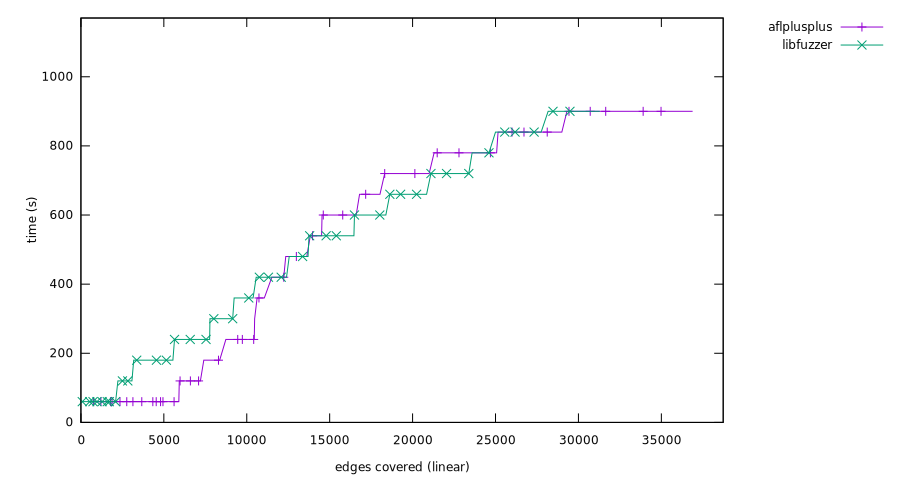

Experiment result
Critical difference
Micro-benchmark Critical difference
| Fuzzer | Rank |
|---|
| libfuzzer | 1.46 |
| aflplusplus | 1.47 |
Overall (ranking by edges covered)
- aflplusplus (36,885 edges covered), success rate: 15.00%(30/200 pairs)
- libfuzzer (31,288 edges covered), success rate: 13.00%(26/200 pairs)

bloaty_fuzz_target
Ranking
- libfuzzer, (13,657 edges covered), success rate: 13.00%(13/100 pairs)
- aflplusplus, (10,824 edges covered), success rate: 11.00%(11/100 pairs)
Mann-Whitney U test
freetype2-2017
Ranking
- aflplusplus, (26,061 edges covered), success rate: 19.00%(19/100 pairs)
- libfuzzer, (17,631 edges covered), success rate: 13.00%(13/100 pairs)
Mann-Whitney U test